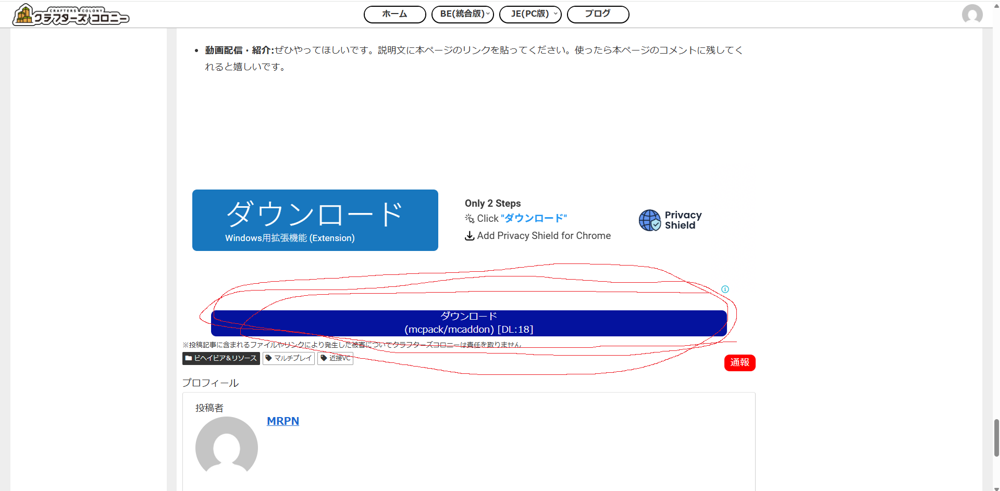
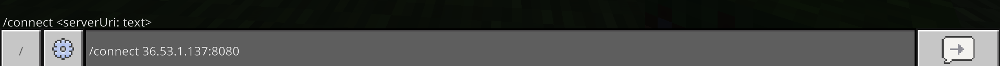
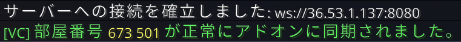
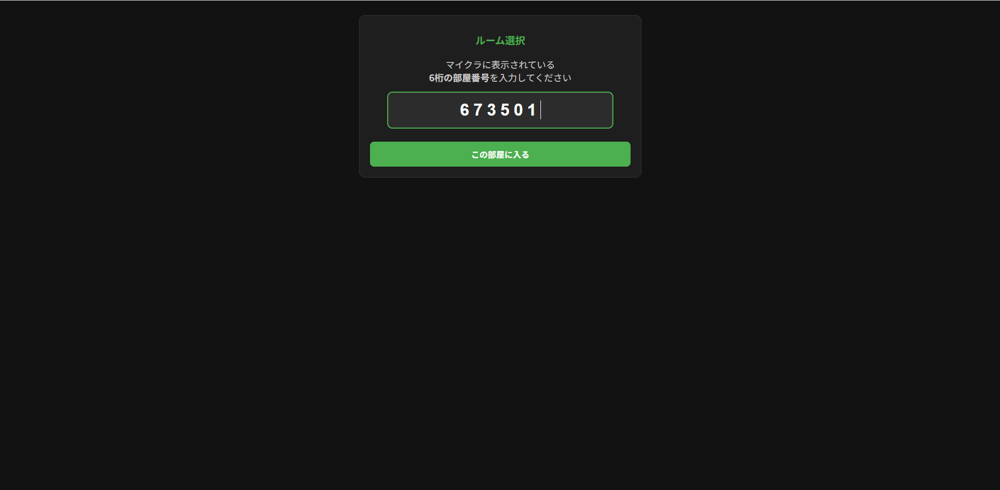
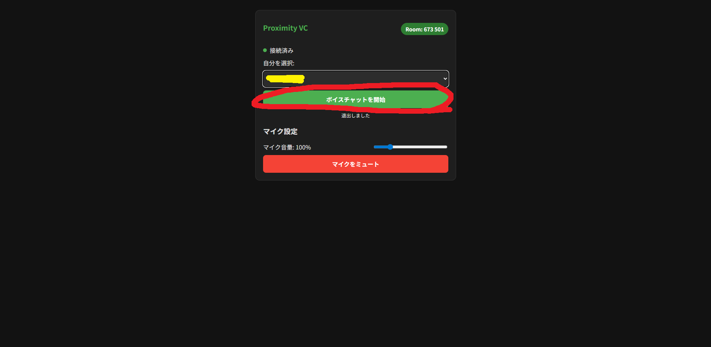
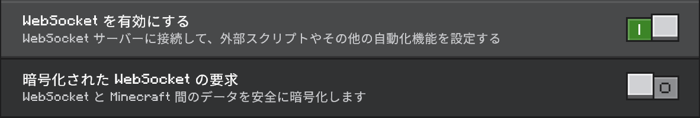

Minecraft Voice Chat Infrastructure
このシステムは、マインクラフト内の位置データとブラウザ（Webサイト）を同期させ、プレイヤー同士の距離に応じたリアルタイムなボイスチャットを実現します。






/vc:template [name:string]/vc:dict [distance:float]/vc:spectator [mode:string]/vc:setting/vc:jam [PlayerSelector]対象プレイヤーのボイスチャットにおける音量計算式・オーディオ制御（JavaScript構文）をゲーム内からリアルタイムに変更・確認するためのコマンドです。
/vc:vol_formula <target: プレイヤーセレクター> [formula: 文字列]| 引数名 | 必須/任意 | 型 | 説明 |
|---|---|---|---|
| target | 必須 | プレイヤーセレクター | 式を設定・確認したい対象プレイヤー（@s、@a、プレイヤー名など） |
| formula | 任意 | 文字列 (String) | 適用したいJavaScriptの制御式。未指定の場合は現在の設定値をチャットに表示します。 |
これからの数式は、ただの単一の計算式ではなく、JavaScriptの構文として変数への代入式を記述し、それぞれの命令をセミコロン ;
で区切る必要があります。
vol （音量設定）： 最終的な音量を代入します。0 が無音、1
が100%（1を超えても機能しますが、現実的には 5 程度が限度です）。Spatial_Audio （立体音響制御）： true
にするとマイクラ内の位置に応じた3D立体音響が有効になり、false にすると2D（全方位一律）の音声になります。; の必須化： vol = ...; Spatial_Audio = ...;
のように、各命令の末尾には必ずセミコロンを付けてください。vol = linear(30, dist); Spatial_Audio = true;マイクラのコマンド引数に数式を文字列として渡す場合、以下のエスケープルールを厳守する必要があります。
ルール①：全体を "" で囲む
数式内にスペースやセミコロンが含まれるため、引数の始まりと終わりを必ずダブルクォーテーション "" で明示してください。
/vc:vol_formula @s vol = dist < 10 ? 1 : 0; Spatial_Audio = true;
/vc:vol_formula @s "vol = dist < 10 ? 1 : 0; Spatial_Audio = true;"
ルール②：式の中で文字列を使う時は ￥（\） でエスケープする
数式（JavaScript）の内部で、特定のタグ名やディメンション名などの「文字列」を指定したい場合は、ダブルクォーテーションの前にバックスラッシュ（環境によっては円マーク）を付けて
\" と記述します。
/vc:vol_formula @s "vol = me.dim === "minecraft:overworld" ? 1 : 0; Spatial_Audio = true;"
/vc:vol_formula @s "vol = me.dim === \"minecraft:overworld\" ? 1 : 0; Spatial_Audio = true;"
Webブラウザ側で制御式が実行される際、記述した式の中で以下のオブジェクトやヘルパー関数が自動的に利用可能になります。
| 変数名 | 説明 |
|---|---|
me |
自分の情報オブジェクト（me.x, me.y, me.z で座標、me.dim
でディメンション、me.mode でゲームモードを取得。me.hasTag("タグ名") でタグ判定が可能） |
other |
通話相手の情報オブジェクト（プロパティや関数は me と同様） |
dist |
自分と相手の3次元距離（※Y軸の高さは1/2に圧縮されて計算されています） |
sameDim |
自分と相手が同じディメンションにいるかどうかの真偽値（true / false） |
setting |
サーバー側の現在の設定（setting.dict で最大通話距離などを取得可能） |
me（自分）および other（通話相手）のオブジェクトからは、以下の豊富なゲーム内データを取得して計算に利用できます。
| オブジェクト・プロパティ | 型 | 説明・取得できるデータ |
|---|---|---|
me.name / other.name |
String | プレイヤーの識別名（名前） |
me.x, me.y, me.z |
Number | 現在の3次元座標（X, Y, Z） |
me.x_rot / me.y_rot |
Number | プレイヤーの首の角度（X軸回転: 上下 / Y軸回転: 左右） |
me.mode / other.mode |
String | ゲームモード（"Survival", "Creative", "Spectator" など） |
me.dim / other.dim |
String | ディメンションID（"minecraft:overworld", "minecraft:nether",
"minecraft:the_end"）
|
me.time / other.time |
Number | ゲーム内の現在時刻（0〜24000のTick値。昼夜の判定などに利用可能） |
me.isJamming / other.isJamming |
Boolean | 通信妨害（ジャミング）を受けているかどうかの真偽値（true / false） |
me.vol_formula |
String | そのプレイヤーに現在設定されている数式文字列そのもの |
me.tags / other.tags |
Array | プレイヤーが持っているマイクラの全タグの配列。※特定のタグがあるかは後述の hasTag() メソッドで判定します |
me.hasTag("タグ名") / other.hasTag("タグ名")：対象のプレイヤーが指定したタグを持っている場合に
true を返します。
linear(max_dist, dist)：距離に応じたシンプルな直線減衰を計算して数値を返す共通ヘルパー関数。数式内に特定のコメント文字を含めることで、ブラウザ側の制限処理のモードを切り替えることができます。
/*none*/
（デフォルト）：/*all*/
：数式を指定せずに実行すると、対象プレイヤーの現在の設定が /say コマンドでチャット欄に表示されます。
/vc:vol_formula @s初期状態の自動減衰モードに戻したい場合は /*none*/ を書き込みます。
/vc:vol_formula @a "/*none*/"/*all*/ を使用。自分と相手が共に radio タグを持っているなら、距離に関係なく音量を 1・立体音響を
false（無線風）にし、そうでないなら通常の30マスの立体音響減衰にする例です。
/vc:vol_formula @a "/*all*/ vol = me.hasTag(\"radio\") && other.hasTag(\"radio\") ? 1 : linear(30, dist); Spatial_Audio = !(me.hasTag(\"radio\") && other.hasTag(\"radio\"));"相手がネザー（minecraft:nether）にいる時は、音量を最大10ブロックに狭め、音が回り込んで聞こえるように立体音響を false
にする設定例です。
/vc:vol_formula @a "vol = other.dim === \"minecraft:nether\" ? linear(10, dist) : linear(30, dist); Spatial_Audio = other.dim === \"minecraft:nether\" ? false : true;"